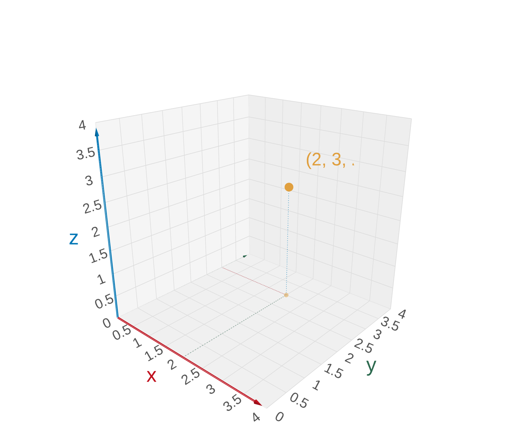
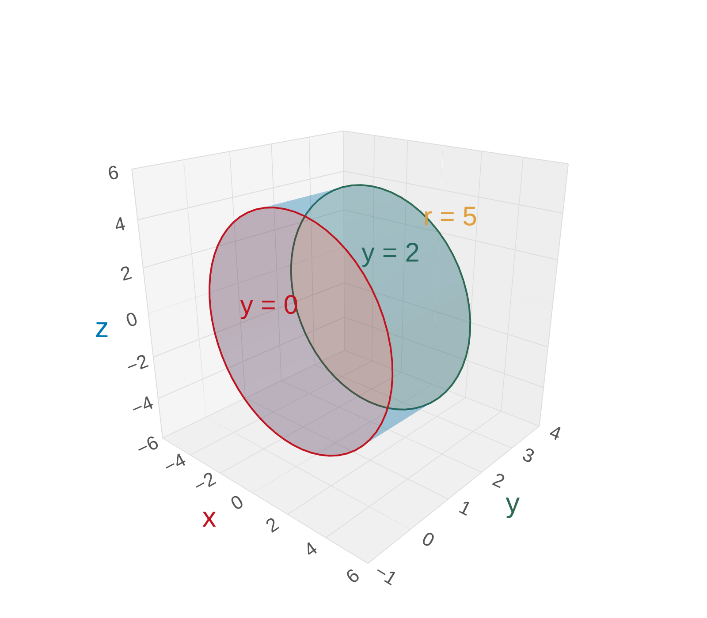

Section 12.1: 3D Coordinate Systems
Vectors and the Geometry of Space
MTH 310
Calculus III
Ordered Triples in 3D
We locate points in space using ordered triples \((a, b, c)\):
- \(a\) = x-coordinate
- \(b\) = y-coordinate
- \(c\) = z-coordinate

The Right-Hand Rule

Curl your right hand from the positive x-axis toward the positive y-axis.
Your thumb points in the direction of the positive z-axis.
Classroom Coordinates
Example 1
If the lower-left corner at the front of the classroom is the origin, with coordinate axes along the edges formed by the floor and walls, what are the approximate coordinates (in feet) of:
- The projector?
- The nearest door in Murphy Library?

The projector: \((15, 15, 9)\)
Nearest door in Murphy Library: \((300, -36, -25)\) — negative coordinates mean behind/below the origin
Coordinate Planes

The three coordinate planes divide space:
- xy-plane: \(z = 0\) (the floor)
- xz-plane: \(y = 0\) (left wall)
- yz-plane: \(x = 0\) (front wall)
The Eight Octants
The coordinate planes divide \(\mathbb{R}^3\) into 8 octants.
The first octant has all positive coordinates: \((+, +, +)\)
| Octant | x | y | z |
|---|---|---|---|
| I | + | + | + |
| II | \(-\) | + | + |
| III | \(-\) | \(-\) | + |
| IV | + | \(-\) | + |
\\[2pt]\small ... and 4 more below the xy-plane

Curves vs. Surfaces

Sketching Planes
Example 2
Identify and sketch the surfaces \(z = 3\) and \(y = 5\).
\(z = 3\): a horizontal plane — all points whose z-coordinate equals 3. The plane floats 3 units above the xy-plane.
\(y = 5\): a vertical plane — all points whose y-coordinate equals 5. The plane is parallel to the xz-plane, shifted 5 units in the y-direction.


A Cylinder
Example 3
Identify and sketch the surface \(x^2 + z^2 = 4\).
Compare to \(x^2 + y^2 = r^2\) — this is a circle of radius \(r\). Here \(x^2 + z^2 = 4\) is a circle of radius 2 in the \(xz\)-plane.
Since \(y\) is missing, it can be anything — the circle extends infinitely along the \(y\)-axis.

Bonus: Parabolic Cylinder
What about \(z = x^2\)?
In 2D, \(z = x^2\) is a parabola in the \(xz\)-plane.
\(y\) is free — extends infinitely in the \(y\)-direction. Result: a parabolic cylinder.

Key Idea: Cylinders
\(x^2 + z^2 = 4\)
Missing \(y\) \(\Rightarrow\) circular cylinder along \(y\)-axis
\(z = x^2\)
Missing \(y\) \(\Rightarrow\) parabolic cylinder along \(y\)-axis
Distance Formula in 3D
Distance Formula in Three Dimensions
The distance \(|P_1 P_2|\) between points \(P_1(x_1, y_1, z_1)\) and \(P_2(x_2, y_2, z_2)\) is:
\[|P_1 P_2| = \sqrt{(x_2 - x_1)^2 + (y_2 - y_1)^2 + (z_2 - z_1)^2}\]
This is the natural extension of the 2D distance formula — just add the \(z\)-component under the radical.

Equation of a Sphere
Example 4
What is the equation for a sphere of radius \(r\) centered at \(C(h, k, l)\)?
We want all points \(P(x,y,z)\) so that \(|PC| = r\). Apply the distance formula:
\[\sqrt{(x-h)^2 + (y-k)^2 + (z-l)^2} = r\]
Square both sides:
Equation of a Sphere
\[(x-h)^2 + (y-k)^2 + (z-l)^2 = r^2\]

Describing a 3D Region
Example 5
Describe and sketch the region in \(\mathbb{R}^3\) described by:
\[x^2 + z^2 \leq 25, \quad 0 \leq y \leq 2\]
Start with \(x^2 + z^2 \leq 25\): a solid disk of radius 5 in the \(xz\)-plane. As a cylinder in 3D, it extends infinitely in the \(y\)-direction.
\(0 \leq y \leq 2\) chops the cylinder between planes \(y = 0\) and \(y = 2\).
